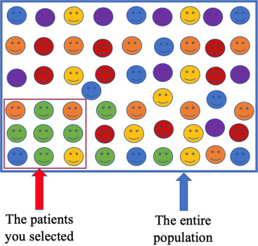
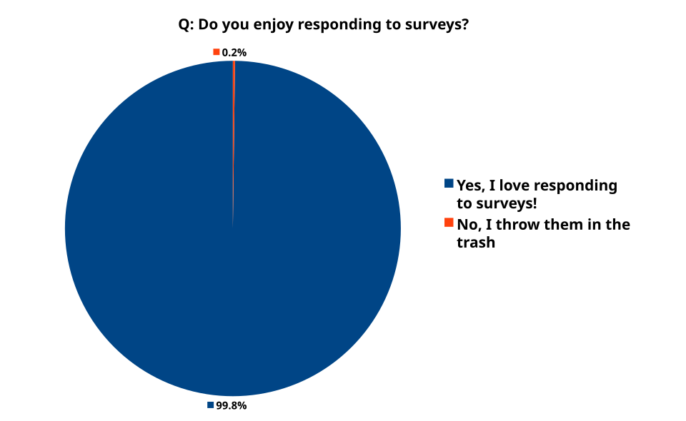
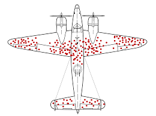
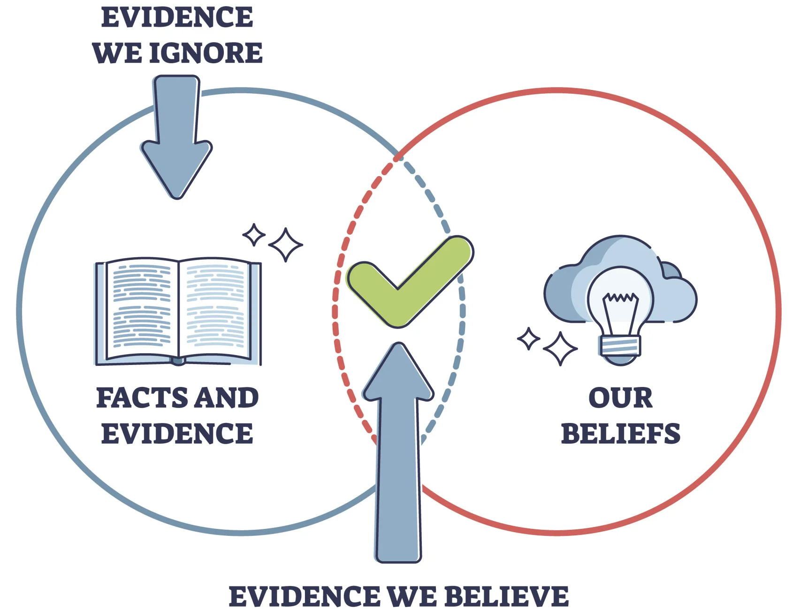

Statistical Thinking
2026-10-13
Understanding bias is crucial in data analytics, as it affects the reliability and fairness of insights and models.
As junior data analysts, it’s easy to fall into the trap of believing that data is objective, that it represents raw truth, and that it cannot be misinterpreted.
Data is produced either by humans or by machines and algorithms created by humans.
\[\Downarrow\]
Data inevitably reflects human assumptions, choices, and limitations.
Bias can therefore lead to poor decisions or false beliefs if left unchecked.
One of the core principles of data ethics is transparency in how data is:
Bias awareness does not eliminate all issues, but it significantly reduces analytical risk.
Biases at this stage affect representation.
If present, all downstream analysis is structurally compromised.
Selection Biases:
Happens when certain groups are systematically excluded or included due to how data is selected.
Example:
A marketing campaign’s success is evaluated only on customers who opened emails, ignoring those who didn’t → engagement appears artificially high.
How to Avoid?

Occurs when the data collected is not representative of the entire population.
Example:
A telecom company predicts churn using data only from urban customers, ignoring rural ones.
The model will likely perform poorly for rural areas.
How to Avoid?

.
Focusing only on successful cases while ignoring failures.
Example:
Analyzing only successful marketing campaigns inflates perceived effectiveness.
How to Avoid?

.
Important variables are mistakenly left out during data collection or preprocessing.
Example:
An e-commerce model excludes device_type (mobile vs. desktop), missing behavior differences that affect conversion.
How to Avoid?
"must-have" variable inventory..
Biases at this stage affect how data is recorded and reported.
Even with correct population coverage, poor measurement distorts reality.
Arises from inaccurate tools or methods used to collect data.
Example:
A survey app records 0 when users skip a question instead of missing, misleading analysts.
How to Avoid?
Occurs when participants don’t accurately remember past events.
Example:
Respondents under or over report store visits over the past month.
How to Avoid?
Participants give socially desirable or expected answers rather than truthful ones.
Example:
Customers rate satisfaction higher to appear polite.
How to Avoid?
A researcher’s expectations influence data collection or interpretation.
Example:
An analyst expecting a new ad to perform well emphasizes positive feedback.
How to Avoid?
Biases at this stage affect interpretation, reasoning, and model learning.
They often amplify earlier data issues.
Tendency to favor data that confirms existing beliefs.
Example:
Analyzing only high-discount months to prove discounts improve retention.
How to Avoid?

.
Recent or vivid events are over-weighted in judgment.
Example:
Overestimating plane crash risk after extensive media coverage.
How to Avoid?
Outdated or biased historical data perpetuates inequalities.
Example:
A credit model trained on biased historical lending decisions disadvantages certain groups.
How to Avoid?
Algorithms learn or amplify biased patterns from data.
Example:
A hiring model trained on biased past decisions favors male applicants.
How to Avoid?
Biases at this stage affect how insights are presented and interpreted.
Selective presentation of results that favor a narrative.
Example:
Highlighting CTR improvements while hiding declining customer satisfaction.
How to Avoid?
| Bias Type | Key Cause | Example Context |
|---|---|---|
| Selection Bias | Non-random inclusion | Only counting email openers |
| Sampling Bias | Non-representative sample | Urban-only churn model |
| Survivorship Bias | Ignoring failures | Studying only successful campaigns |
| Exclusion Bias | Missing variables | Omitting device type |
| Measurement Bias | Faulty data recording | 0 instead of missing |
| Recall Bias | Memory errors | Self-reported visits |
| Response Bias | Social desirability | Inflated satisfaction |
| Observer Bias | Researcher expectations | Selective feedback |
| Confirmation Bias | Favoring expected results | Ignoring non-discount data |
| Availability Bias | Recency effects | Overestimating rare risks |
| Historical Bias | Biased legacy data | Credit discrimination |
| Algorithmic Bias | Model amplification | Gender bias in hiring |
| Reporting Bias | Selective reporting | Hidden negative KPIs |
The next chapter introduces Descriptive Statistics and Introductory Visualization.